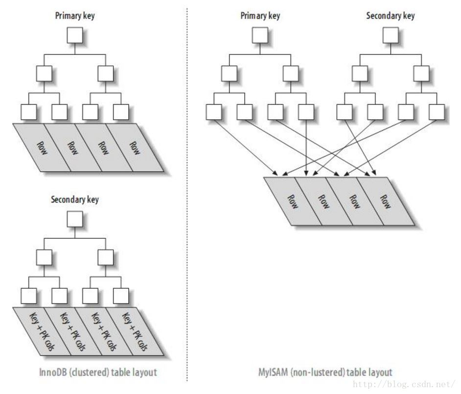

本文主要在学习了 MySQL 基础的前提下帮助深入理解 MySQL 以及大数据量情况下提高数据库性能的优化。
MySQL架构

MySQL的设计体现了分层设计的思想，从上至下分为：
- 连接层：包括各种Connector和Shell
- 服务层：SQL接口、解析器Parser、优化器Optimizer、缓存等
- 引擎层：包括InnoDB、MyISAM等各种存储引擎
- 存储层：和磁盘和日志文件打交道
引擎层
InnoDB 和 MyISAM 的区别：
- InnoDB 主要为了大数据量和抗高并发设计，MyISAM为了性能设计
- InnoDB 支持行级锁、事务、外键，MyISAM 只支持表级锁
- InnoDB 使用聚簇索引， MyISAM 使用非聚促索引
 - MyISAM 存储引擎支持空间数据索引（R-Tree），可以用于地理数据存储
缓存
MySQL 与磁盘交互数据的最小单位是页（默认1页=16kB）
内存池（Buffer Pool）默认大小=128MB
由此可以计算出内存池中的默认页数为 128M / 16kB = 8172
redo.log 和 bin.log
redo log是InnoDB存储引擎层的日志，binlog是MySQL Server层记录的日志，两者内容有些重复（格式不一样）
可以在MySQL崩溃重启后对数据进行恢复
一条 Update 语句执行过程
- 修改 buffer（产生脏页）
- 生成对应 redo.log 和 bin.log （日志先行原则）
- redo.log 和 bin.log 的持久化，
- 返回修改成功
事务
事务指的是满足 ACID（Atomicity原子性、Consistency 一致性、Isolation 隔离性、Durability 持久性） 特性的一组操作，可以通过 Commit 提交一个事务，也可以使用 Rollback 进行回滚。
MySQL 事务执行过程
1.事务开始
2.申请锁资源，对id=2这行数据上排他锁
3.将需要修改的data pages读取到innodb_buffer_cache
4.记录id=2的数据到undo log
5.记录id=2修改后的数据到redo log buffer
6.将buffer cache中id=2得name改为test
7.commit，触发二阶段提交2pc
8.事务结束
redo日志的两阶段提交
redo log 的写入拆成了两个步骤：prepare 和 commit，这就是”两阶段提交”
主要是保证redo log事务写入顺序和binlog 事务顺序一致(通过事务id保证一致)
prepare阶段：redo持久化到磁盘（redo group commit），并将回滚段置为prepared状态，此时binlog不做操作
commit阶段：innodb释放锁，释放回滚段，设置redo log提交状态，binlog持久化到磁盘，然后存储引擎层提交
说白了就是执行完更新语句后，先将redo log状态设置为prepared，等更新内容写入binlog后，在将redo log状态设置为commited
redo.log 的持久化策略配置：
=0： 事务提交时不立即持久化，而是交给后台进程做
=1：…立即持久化
=2：…立即交给操作系统缓存
并发一致性问题：
- 修改丢失
- 读脏数据
- 不可重复读
- 幻读

MVCC （Multi-Version Concurrency Control，多版本并发控制）
Read Uncommited模式下：事务连接的链表可以变化
Repeatable Read模式下：事务连接的链表指针固定
索引
解释：排好序的快速查找的数据结构
为数据表添加索引（index）有两种方式：
- create index
- alter table
索引也是存在于磁盘中的，需要时加载到内存中进行检索。
索引的优缺点
优点：加快查询和排序的速度
缺点：每创建一个索引都会复制一份表数据指针，会导致插入、更新速度减慢
索引速度太慢的原因
- 查询语句写的烂
- 索引失效
- 关联查询太多
聚簇索引和非聚促索引
聚簇索引的叶子节点就是数据节点，而非聚簇索引的叶子节点仍然是索引节点，只不过有指向对应数据块的指针。
一般情况下主键会默认创建聚簇索引，且一张表只允许存在一个聚簇索引。
索引匹配
最佳左前缀原则
索引优化
大表优化
数据库逻辑设计三范式：
1NF：要求属性具有原子性
2NF：要求记录有唯一标识，即不存在部分依赖
在2NF中，非主属性要完全依赖与主属性
3NF：任何字段不能由其他字段派生出来，没有字段冗余，即不存在传递依赖
每一范式必然满足前一范式。还有BC范式和4范式
若存在关键字段决定关键字段的情况，则其不符合BCNF
千万级大表如何优化
条件
数据量：千万级
优化对象：数据表
根据业务类型，一般将数据分为三种：
- 流水型数据
- 状态性数据：多笔业务数据之间依赖于有状态的数据，而且要保证改数据的正确性。比如缴费充值时必须要获取原来的余额，才能支付成功。
- 配置型数据
根据数据类型的不同，优化思路也不同，整理如下表所示：
| 数据量增长情况 | 数据表类型 | 业务特点 | 优化核心思想 |
|---|---|---|---|
| 千万级 是一个相对稳定的数据量 |
状态表 | OLTP业务方向 | 能不拆就不拆，读需求水平扩展 |
| 千万级 可能达到亿万级甚至更高 |
流水表 | OLTP业务历史数据 | 业务拆分，面向分布式存储设计 |
| 千万级 可能达到亿万级甚至更高 |
流水表 | OLTP业务统计数据源 | 设计数据统计需求存储的分布式扩展 |
| 千万级 不应该有这么多的数据 |
配置表 | 通用业务 | 小而简，避免大一统 |
库、表的垂直拆分和水平拆分
垂直拆分是将一张列比较多的表拆分成多张表
一般拆分原则：
- 把不常用的字段单独放在一张表中
- 把text、blob等大字段拆分出来放在附表中
- 经常组合查询的列放在一张表中
水平拆分是指数据表行的拆分，当表的行数超过200万行时，就会变慢，这时可以把一张的表的数据拆成多张表来存放
一些拆分原则：
- 取模拆分：比如一张有400W的用户表users，为提高其查询效率我们把其分成4张
- 部分业务逻辑也可以通过地区，年份等字段来进行归档拆分
分库分表带来的问题
- 事务一致性问题，会产生分布式事务
- 跨节点关联查询
- 跨节点分页、排序函数
- 主键重复：要考虑使用全局主键
- 公共表（参数表、数据字典表）需要在每个数据库都保存一份，所有对公共表的更新都要执行一遍。
参考文献：
1、MySQL官网结构图： https://dev.mysql.com/doc/refman/8.0/en/pluggable-storage-overview.html
2、MySQL千万级大表优化，看这一篇就忘不掉了!： https://database.51cto.com/art/202002/610289.htm
3、表的垂直拆分和水平拆分：https://www.kancloud.cn/thinkphp/mysql-design-optimalize/39326
4、MYSQL索引：对聚簇索引和非聚簇索引的认识：https://blog.csdn.net/alexdamiao/article/details/51934917#:~:text=%E8%81%9A%E7%B0%87%E7%B4%A2%E5%BC%95%E6%98%AF%E5%AF%B9,%E5%AD%98%E5%9C%A8%E4%B8%80%E4%B8%AA%E8%81%9A%E7%B0%87%E7%B4%A2%E5%BC%95%E3%80%82